mathematicskit#
mathematicskit is a unified toolkit for computational mathematics, spanning 16 domains – from abstract algebra to statistical inference – under one NumPy-based API. It’s built for mathematics students working through a textbook problem, curious learners exploring a topic on their own, and educators building a demonstration. Under the hood, it calls numpy/scipy directly for anything they already implement (decompositions, eigensolvers, quadrature, statistical distributions, optimization routines, and more) – mathematicskit’s value-add is its own dataclass-result API, docstrings, visualizers, tests, and examples wrapped around those calls, not reinventing numerical primitives that are already correct and well-tested upstream. Algorithms are hand-rolled from first principles only where no numpy/scipy equivalent exists (e.g. Dijkstra/Kruskal, finite fields, modular arithmetic), or where the algorithm’s own iterate behavior is itself the pedagogical subject (e.g. Newton’s method’s convergence history, forward/reverse-mode autodiff). No hard dependency on networkx, cvxpy, or SageMath.

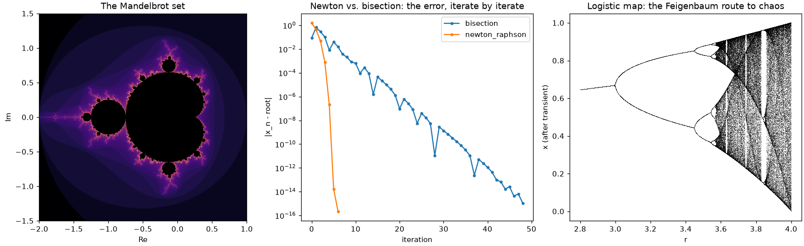
Every subpackage is grounded in the mathematics it implements, not just coded against it: public functions carry runnable, CI-checked examples, and each subpackage’s history page traces the breakthroughs behind it – from Euclid’s algorithm to the fast Fourier transform – each one linked to the code that reproduces it.
In short, mathematicskit is 16 domains behind one consistent API, plus a history-of-mathematics narrative in which every milestone links to runnable gallery code. It is closest in spirit to a teaching resource such as Numerical Recipes or the Scientific Python Lectures (formerly the SciPy lecture notes), but packaged as an importable library.
Important
Each domain is a teaching-depth subset of its field, not a complete implementation. mathematicskit is not a replacement for specialist libraries in production work: for that, use the dedicated tools (SciPy, NetworkX, CVXPY, statsmodels, SymPy, SageMath, and the like) directly.
mathematicskit.abstract_algebra– cyclic/permutation groups, subgroups and cosets, finite fields, and polynomial ring arithmetic.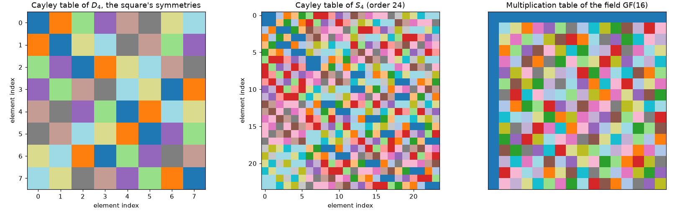
mathematicskit.calculus– numerical differentiation/integration, forward- and reverse-mode automatic differentiation, and Taylor series.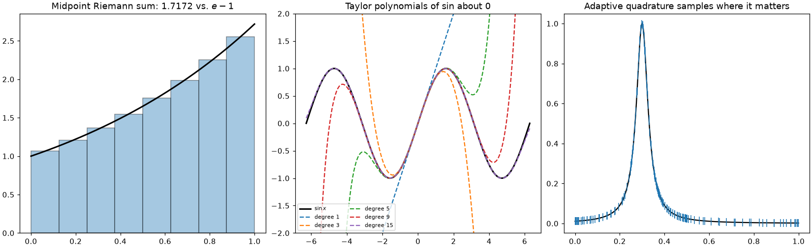
mathematicskit.combinatorics– counting and generation, Pascal’s triangle, integer partitions, inclusion-exclusion, and Stirling/ Catalan/Bell numbers.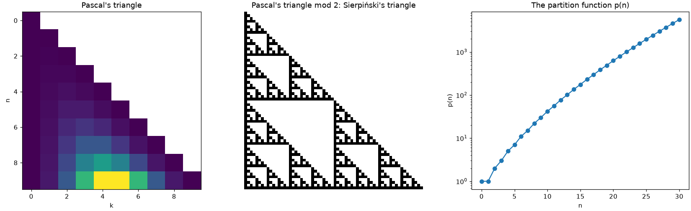
mathematicskit.complex_analysis– the Cauchy-Riemann equations, contour integrals, Cauchy’s integral theorem and formula, residues and the argument principle, conformal maps, and domain coloring.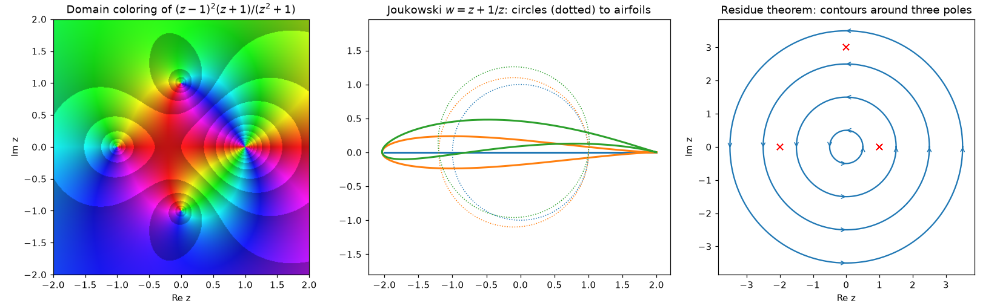
mathematicskit.fractals_chaos– Lyapunov exponents, box-counting fractal dimension, Mandelbrot/Julia sets, iterated function systems, and cellular automata.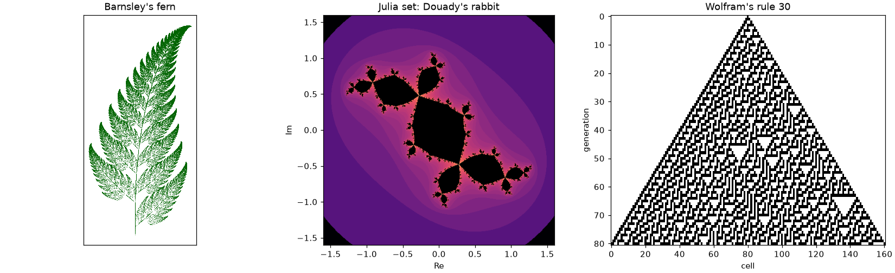
mathematicskit.geometry– convex hull, Delaunay triangulation/Voronoi diagrams, segment intersection/point-in-polygon, polygon area/ centroid, and the Frenet-Serret frame.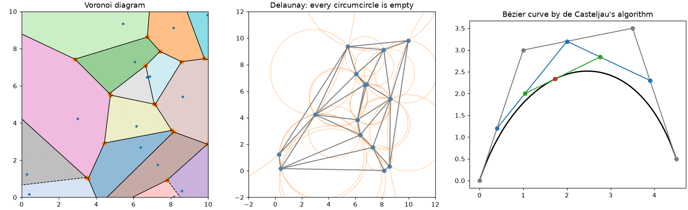
mathematicskit.graph_theory– shortest paths, minimum spanning trees, maximum flow/minimum cut, graph coloring, and spectral graph theory.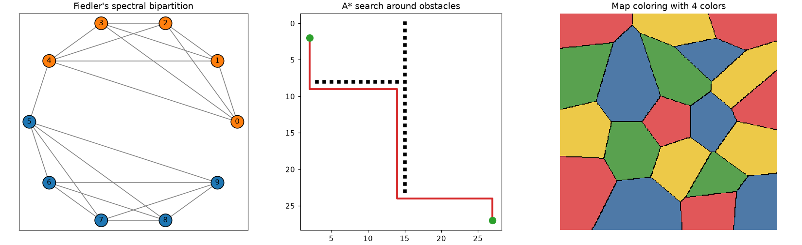
mathematicskit.linalg– LU/QR/Cholesky decompositions, symmetric eigenvalue algorithms, SVD, iterative Krylov solvers, and least-squares numerical stability.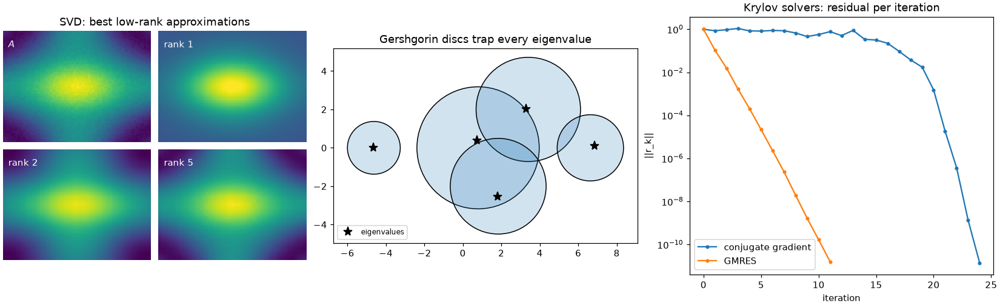
mathematicskit.number_theory– modular arithmetic, primality testing, the Chinese Remainder Theorem, continued fractions, multiplicative functions, and Diophantine equation solvers.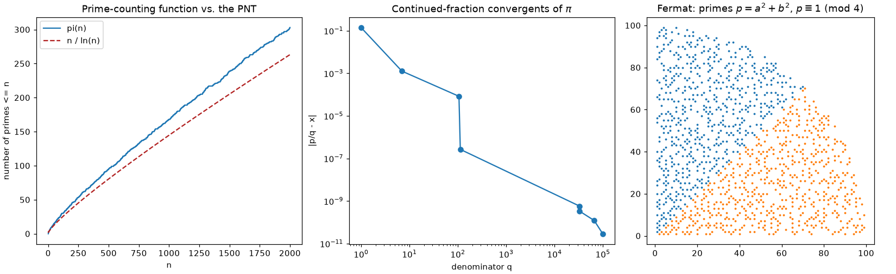
mathematicskit.numerical_analysis– root finding with convergence-order verification, polynomial interpolation (Lagrange, Newton divided-difference, cubic splines, Chebyshev nodes), least-squares polynomial regression, floating-point arithmetic, and Newton/Broyden for nonlinear systems.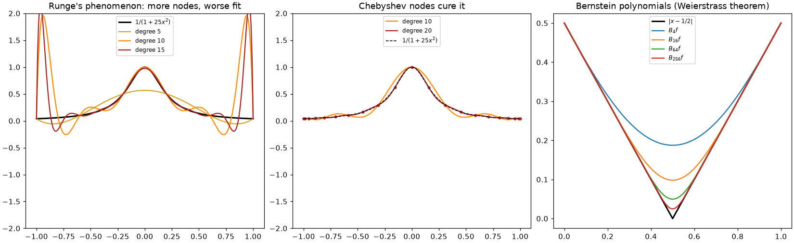
mathematicskit.ode_dynamics– fixed-point stability, phase portraits, the logistic map, bifurcation normal forms, limit cycles, and Poincare sections.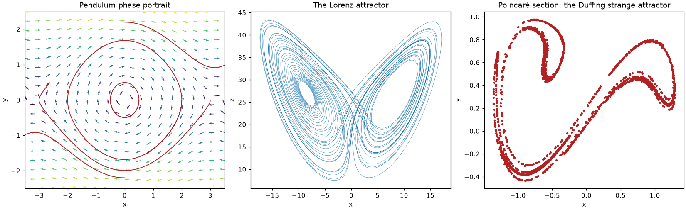
mathematicskit.pde– heat, wave, advection, and Poisson/Laplace problems: the method of lines, Crank-Nicolson, CFL and von Neumann stability, and Fourier/Chebyshev spectral methods.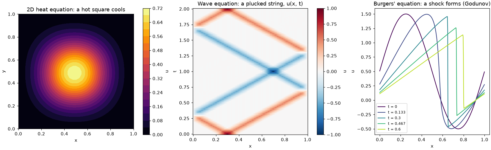
mathematicskit.optimization– gradient descent, nonlinear conjugate gradient, Newton/BFGS, Lagrange/KKT constrained optimization, the penalty method, and linear programming.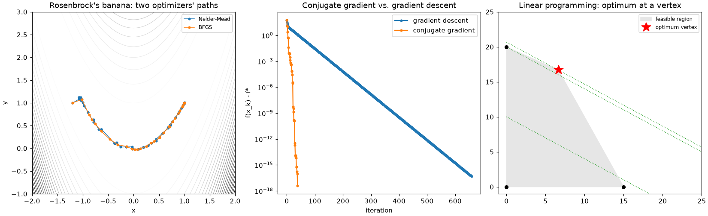
mathematicskit.probability– discrete/continuous distributions, Monte Carlo integration with variance reduction, the Law of Large Numbers and Central Limit Theorem, and discrete-time Markov chains.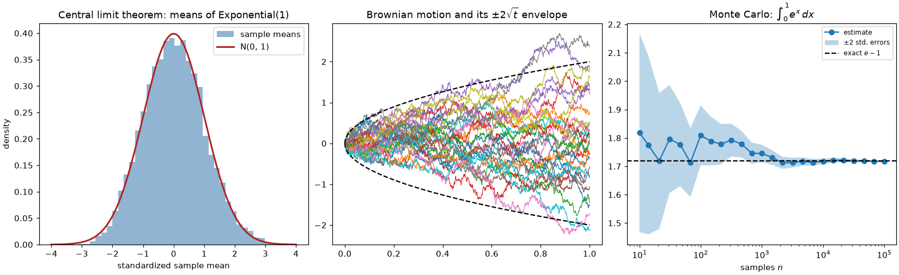
mathematicskit.special_functions– gamma/beta functions, Bessel functions, orthogonal polynomial families, and the discrete Fourier transform (naive DFT vs. radix-2 FFT vs.numpy.fft).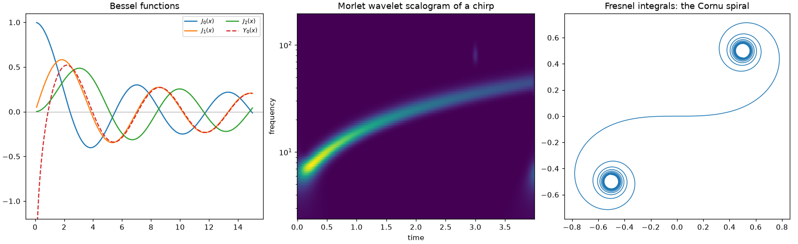
mathematicskit.statistics– descriptive statistics, hypothesis tests, confidence intervals, OLS regression, and bootstrap resampling.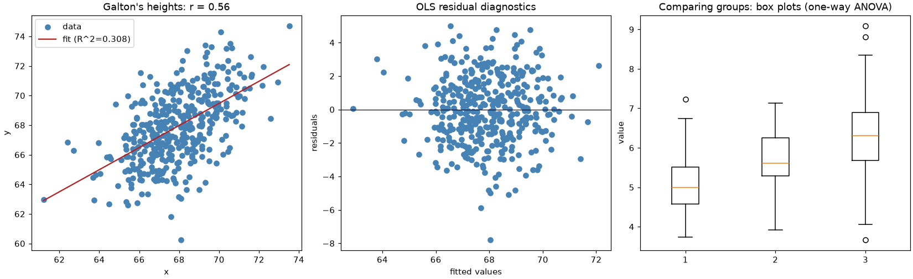


mathematicskit is part of a family of packages – physicskit, mathematicskit and chemistrykit – that share the same architecture, API conventions, and history-driven documentation.
Install and try it#
pip install "mathematicskit[fast]" # with numba JIT acceleration (recommended)
pip install mathematicskit # pure numpy/scipy/matplotlib, e.g. for Pyodide
The fast extra adds numba, which compiles
the inner loops of ode_dynamics, fractals_chaos, pde, and
integrators. Without it, those kernels run as plain Python with the same
results, only slower.
To try it without installing anything, open the quickstart notebook in Colab, or use the JupyterLite button at the top of every gallery example. Every gallery also has a download-all button for its scripts and notebooks. The public API follows a documented stability and deprecation policy.
Conventionally imported as mk:
import numpy as np
import mathematicskit as mk
newton = mk.numerical_analysis.NewtonRaphson(lambda x: x**2 - 2, lambda x: 2 * x, x0=3.0, tol=1e-14).solve()
print(newton.root, len(newton.history)) # every iterate is kept
spline = mk.numerical_analysis.CubicSpline(x=[0, 1, 2, 3], y=[0, 1, 0, 1], boundary="natural")
print(spline.evaluate(1.5))